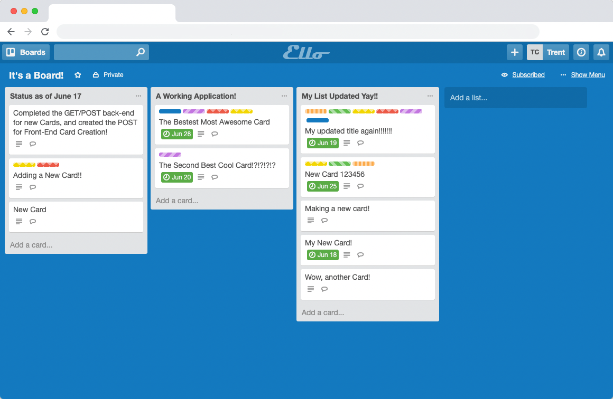
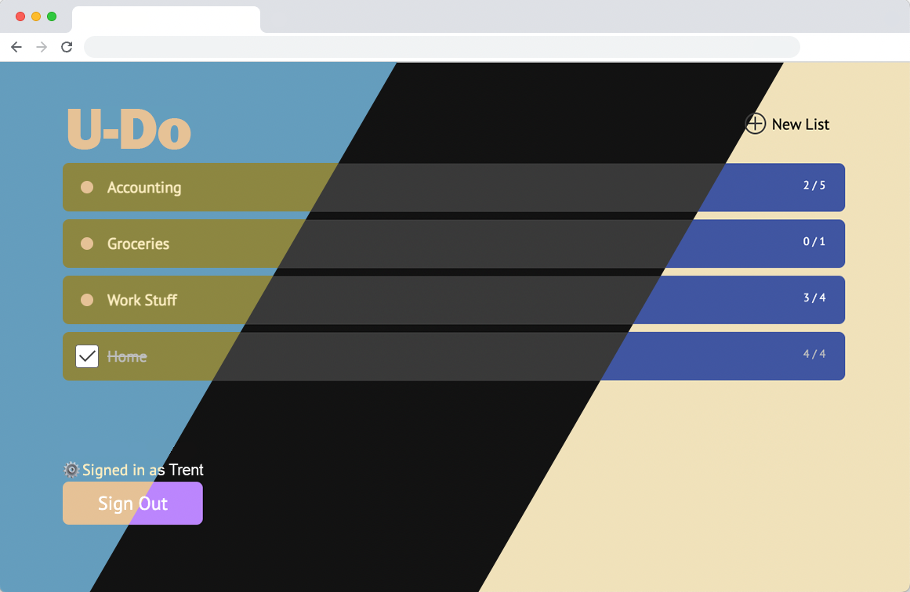

Other Projects

ReqBin
A tool to collect and debug webhooks (Node.js/Express,
WebSockets, React, PostgreSQL, MongoDB)

Ello
A kanban-style app for task/deadline management
(Node.js/Express, MongoDB, React/Redux)

U-Do
A to-do tracker with user login/state and theming
(Node.js/Express, PostgreSQL, MongoDB, Pug)
About Me
Skills
Backend
Node.js, Express, Go, PostgreSQL, MongoDB, Restful APIs, Webhooks
Frontend
Javascript, React/Redux, HTML/CSS, MUI, Chart.js, Prism,js, jQuery, Handlebars/Pug
Other
Docker, Git/Github, HTTP, Axios, Redis, NATS, Websocket, SSH, SSE, Digital Ocean, Adobe Suite
Node.js, Express, Go, PostgreSQL, MongoDB, Restful APIs, Webhooks
Frontend
Javascript, React/Redux, HTML/CSS, MUI, Chart.js, Prism,js, jQuery, Handlebars/Pug
Other
Docker, Git/Github, HTTP, Axios, Redis, NATS, Websocket, SSH, SSE, Digital Ocean, Adobe Suite
Bio
I’m a midwest-raised software engineer with a passion for anything
well-designed. I attended Indiana University (go Hoosiers) after which
I spent a number of years living on both coasts before realizing
Chicago offered the best compromise between the 2. During the nice 5-6
months of the year I spend most my time outside running, biking and
swimming in the lake. The remainder are usually spent reading, staying
warm and skiing when I can.
I'm currently looking for new opportunities, either remote or Chicago-based. I have a strong background in team collaboration, with time spent at start-ups and large corporations, within both domestic and international scope. I'm an excellent communicator and have a drive to take on new challenges.
I'm currently looking for new opportunities, either remote or Chicago-based. I have a strong background in team collaboration, with time spent at start-ups and large corporations, within both domestic and international scope. I'm an excellent communicator and have a drive to take on new challenges.
Contact